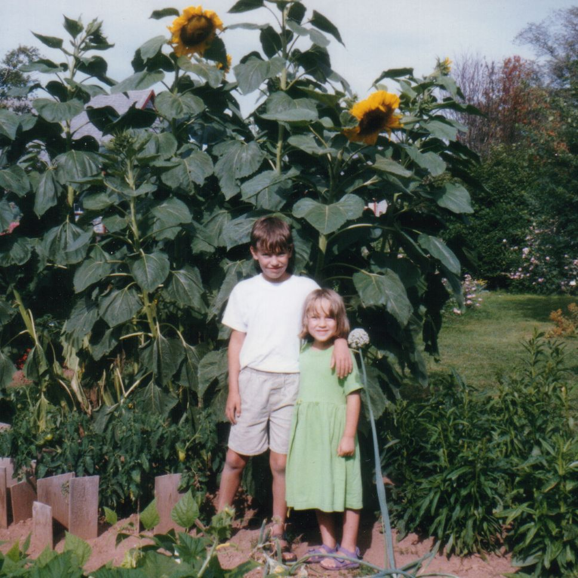

Home with Kids 24/7
By Sophia Sayigh
Maybe you have subscribed to our list or are visiting our website because you have decided unexpectedly to homeschool and now find yourself at home all day with your kids. Here I draw on the wisdom of practicing homeschoolers with tips for managing your day. Trying to recreate school at home can be stressful. And goodness knows, none of us need more stress in our lives. So here is a short list of tips for being around your kids 24/7 that have been successful strategies for many a homeschooling family:
-
Trust your children. Given the time and space, kids are learning machines. Learning isn’t restricted to school hours in a school building. Read John Holt’s Learning All the Time* for a lovely and inspirational observation of young people doing what they do best.
-
Relax about scheduling. More than one article I’ve read stresses that children need schedules, and that imposing a school-like one will make it easier for them to get back into the swing of school when the time comes. Well, some kids benefit from schedules, and others don’t. You know your own kids best. My suggestion is to not feel pressured about this right away. Take some time to see how your family flow works when you are around each other a lot. A schedule can be a framework that helps create a familiar pace to a day, but it doesn’t have to be the bell-ringing-segmented everyone-do-everything-at-the-same-time day that schools have.
If it feels right to you, create a loose schedule, and let individuals add or subtract from it as meets their needs. What might this look like? For one family it might mean getting up at the same time and having breakfast together, doing some reading, writing or math for an hour or two, and then letting kids settle into playing games or building Legos or reading or playing in the backyard. For another family it might be letting everyone sleep until they are ready to wake up, and finding time together later in the day. It’s fine to experiment and change as you need to as you learn more about each other’s rhythms. Keeping to a schedule is definitely not worth a stressful power struggle.
-
Online resources. There are so many, and a lot of previously in-person offerings have been adapted to online. Your local library has tons of online resources from eBooks and downloadable audio books, to movies and online databases. The American Library Association has a list of “Best Digital Tools for Teaching and Learning.” AHEM’s Resources page is a curated jumping off point. And don’t forget about asking other homeschoolers what they are up to. These starting points are just the tip of the iceberg.
-
Outside time. Homeschoolers are lucky to have time every day to spend outside, and now you do too. Go on a walk or bike ride. Learn to identify birds by sight and sound. Explore right outside your door. Free play in the yard. Dig in the dirt and see what you find. Make mud pies. Or just soak up some sun while nursing a nice cup of tea.
-
Time together. Last but far from least—spend some time cuddling on the couch reading books, preparing a meal together, conversing or playing board games, listening to an audio book or a podcast while doing hand or art work, practicing instruments or singing together, taking a walk or bike ride together and stopping to appreciate an emerging bud or creepie crawlie. Time together is the one thing that is definitely worth scheduling into every day.
I don’t want to minimize the challenges of these times. It can be daunting to have your kids around all the time, and to feel responsible for every aspect of their learning, even if homeschooling is your first choice! So be kind to yourself and trust your children have the potential to not only be OK out of school, but to actually thrive, as so many homeschoolers have done.
Support and resources at AHEM:
* As an Amazon Associate, AHEM earns from qualifying purchases.